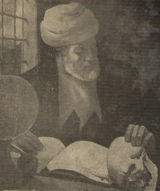

Ýbrahim Hakký (Erzurumlu) (1703-1780)

On sekizinci yüzyýlda yaþamýþ büyük Ýslam alimi ve þairlerindendir. Risale-i Nur'da da yer alan, "Mevlâ görelim neyler / Neylerse güzel eyler" veciz sözlerin yazarýdýr. Hem din ilimleri hem de müsbet ilimlerle uðraþan bir alimdir. Asýrlar öncesinden vermiþ bulunduðu ilmi bilgiler günümüzdeki bilgilerle önemli ölçüde paralellik arz etmektedir.Ýbrahim Hakký, 18 Mayýs 1703 tarihinde Erzurum'a baðlý Hasankale ilçesinde dünyaya geldi. Derviþ Osman Efendi ile Hasankale'nin ileri gelenlerinden birinin kýzý olan Þerife Hanife'nin oðludur. Dokuz yaþýnda iken amcasý tarafýndan babasýnýn da bulunduðu Tillo'ya götürüldü. Babasý daha önceden buraya gelip Ýsmail Fakirullah'a baðlanmýþ ve burada kalmaktaydý. Ýbrahim Hakký Tillo'ya gelince hem uzun zamandan beri görmediði babasýný gördü hem de Fakirullah Hazretleri ile karþýlaþýnca ona karþý derin bir sevgi ve hayranlýk duygusu kendisinde uyandý. Uzun bir süre Tillo'da kaldý ve Fakirullah'ýn ilim ve irfanýndan istifade etti.
Ýbrahim Hakký, babasýnýn vefatýndan sonra Erzurum'a geri döndü. Burada Arapça ve Farsça baþta olmak üzere eðitimine ve ders almaya devam etti. Eðitimini tamamladýktan sonra tekrar Tillo'ya gitti. Bir süre burada kalarak Fakirullah Hazretlerinin vefatýna kadar hizmetinde bulundu. Bundan sonra tekrar Erzurum'a döndü ve bir süre imamlýk yaptý. Bu arada hac farizasýný yerine getirmek maksadýyla hacca gitti. Hac dönüþü Lübbü'l-Kütub adlý eserini yazdý. Bu eserde kendi manzumeleri yer aldýðý gibi Feridüddin, Sadi Þirazi, Nizam-ý Aruzi, Ömer Hayyam gibi meþhur þairlerin þiirlerini eserinde bir araya getirdi.
Ýbrahim Hakký, 1747 yýlýnda Ýstanbul'a gitti. Padiþah I. Mahmud ile görüþerek takdirini kazandý. Saray kütüphanesinde çalýþarak özellikle astronomi konusunda araþtýrmalarda bulundu. Ýstanbul'da bulunduðu süre zarfýnda kendisine müderrislik payesi de verildi. Daha sonra Erzurum'a geri döndü. Daha önce yaptýðý gibi imamlýk vazifesine devam etti. Akabinde ilmi faaliyetlere daha fazla zaman ayýrmak maksadýyla imamlýk vazifesinden ayrýldý. Zamanýnýn çoðunu Hasankale'de geçirdi. 1755 yýlýnda tekrar Ýstanlbul'a gitti. Öncekine nazaran daha fazla kalarak ilmi çalýþmalarýný devam ettirdi.
Ýstanbul dönüþünde yaptýðý çalýþmalarýnýn da katkýsýyla Marifetname'yi kýsa sürede tamamladý. 1763 yýlýnda tekrar Tillo'ya gitti. Fakirullah Hazretlerinin oðullarý tarafýndan ilgiyle karþýlandý. Tillo'da kalmasýný saðlamak ve babalarýnýn yerine geçmesini temin etmeye çalýþtýlar. Kýz kardeþlerini kendisiyle evlendirdiler. Bir kez daha hacca gidip döndükten sonra Tillo'da talebe yetiþtirmeye baþlayarak dersler verdi. Ders verdiði gibi eserlerini yazmaya devam etti. Bir ara tekrar hacca gidip dönüþte Erzurum'a gittiyse de akabinde tekrar Tillo'ya döndü. Ayný zamanda Fakirullah Hazretlerinin kýzý olan hanýmýn, akabinde yine kayýnbiraderi ve Fakirullah Hazretlerinin büyük oðlu olan Hamza Ganiyullah'ýn vefatlarý kendisini çok etkiledi. 22 Haziran 1780 yýlýnda Hakkýn rahmetine kavuþtu. Cenazesi Fakirullah Hazretlerinin türbesine defnedildi.
Ýlme ve okumaya son derece ehemmiyet veren Ýbrahim Hakký Hazretleri "Ýnsaniyye" adlý eserinde; "Bu zamanda en dürüst dost, en uygun meclis arkadaþý, en seçkin yoldaþ, yârlarýn en hayýrlýsý ve sevgililerin en sevgilisi kitaplar olduðu için bunlarýn sohbetlerine meylimi salmýþýmdýr" (Mustafa Çaðrýcý; "Ýbrahim Hakký Erzurumî", TDVÝA. 21. C. s. 306) sözlerine yer vermektedir. Gösterdiði büyük gayret ve yaptýðý araþtýrmalarla kendisini çok iyi yetiþtirdi. Arapça'ya hakim olduðu gibi Türkçe'yi de çok güzel kullandý.
Din ilimleriyle müspet ilimleri bir arada götürerek çok yönlü bir alim olarak tanýndý. Sadece aklýn doðrultusunda giderek yarý aydýn bir alim olmadýðý gibi, fen ilimlerini ihmal etmek suretiyle mutaassýp bir din adamý da deðildi. Aklýný fen, vicdanýný da din ilimleriyle aydýnlatmak suretiyle gerçeði bulmuþ bir alimdi. Yoðun bir bilgi birikimine sahip olup týp, astronomi, anatomi, geometri, aritmetik, fizik, fizyoloji, felsefe, psikoloji, trigonometri, ahlak gibi muhtelif ilim dallarýnda geniþ bir bilgiye sahip oldu.
Anatomi ve insan fizyolojisi ile ilgili verdiði bilgiler ve eserindeki kayýtlar bu günün bilgileriyle paralellik arz etmektedir. Bu meyanda on iki kaburganýn yönleri, fonsiyonel özellikleri, bel kemiði ve bölümleri, bilek, el kemiklerinin görevleri gibi konularda vermiþ bulunduðu bilgiler dikkat çekicidir. Diðer taraftan astronomi ilmi ile ilgili dikkat çekici bilgiler vermektedir. Dünyayý çevreleyen hava tabakalarý ve aralarýnda meydana gelen geliþmeler, güneþ ýsýsýnýn yerden yansýdýðýný, yansýmaya yakýn yerlerin daha sýcak olacaðý, yüksek yerlere çýkýldýkça sýcaklýðýn düþeceði, yýldýrým ve gök gürültüsünün mahiyetleri, ýþýk dalgalarý ile ses dalgalarýnýn yayýlýþýndaki zaman farklarý vb. gibi konularda aktardýðý bilgiler kendinden önceki alimlerin nakillerine dayandýðý gibi, önemli ölçüde kendi gözlemlerine de dayanmaktadýr.
Ýbrahim Hakký, geleneksel ilimleri takip ettiði gibi yeni geliþmeleri de takip etti. Özellikle astronomi alanýndaki yeni geliþmelerden haberdar oldu. Ona göre astronomi ile ilgili yeni hiçbir ilmi geliþme Allah'ýn evreni yaratýp yönetmesi gerçeðine aykýrý deðildir ve olamaz. Bütün ilmi geliþmeler bu çerçeve içinde yorumlanabilir. Zaten, ilmi geliþmeleri din adýna reddetmek çok büyük tehlikeleri ihtiva etmektedir. Bediüzzaman Hazretleri, dünyanýn küre þeklindeki yuvarlaklýk yorumuna þüphe ile bakanlara çeþitli alimlerin eserlerine müracaat etmelerini tavsiye etmektedir. Ýsimleri zikredilip eserlerinin okunmasý tavsiye edilenlerden birisi de Ýbrahim Hakký Hazretleridir. Dünyanýn yuvarlak olduðunu aklýna sýðýþtýramayana Ýbrahim Hakký'nýn arkasýna düþmesini tavsiye eder (Muhakemat s. 49). Bediüzzaman devamla Ýmam-ý Gazali'nin çok þiddetli olan ikazýný hatýrlatýr; "Kim küreviyet-i arz gibi bürhan-ý kat'iyle sabit olan bir emri dine himâyet bahanesiyle inkâr ve reddetse, dine cinayet-i azîm etmiþ olur. Zira bu sadâkat deðil, hýyânettir".
Ýbrahim Hakký, hayatýn en yüksek gayesini marifet ve marifetin en yüce derecesini de Marifetullah olarak açýklar. Marifetullahýn anahtarý kendini bilmektir. Kendini bilmenin anahtarý da alemi bilmektir. Kendini hakkýyla okuyabilen Cenabý Hakkýn fiil ve sýfatlarýna vakýf olabilir. Ýnsan, emrine verilenler üzerinde tasarrufta bulunma imkanýna sahip olduðu gibi, hem kendisini hem de kainatý tasarrufu altýnda bulunduran birinin varlýðýný anlayarak Rabbine ulaþabilir. Ebedi kurtuluþa ermenin yegane yolu Kur'ân-ý Kerim ve Resulullah'ýn sünnetiyle amel etmektir. Bu ayný zamanda her türlü ferdi ve sosyal problemlerin çözülmesini de saðlar.
Ýbrahim Hakký, ilmi sonuçlarla çatýþýr gibi görünen hadislerin tevili yoluna gidilebileceðini söyler. Öküz ve balýk kýssasýnýn tevilini yaparken, bunun öküz ve balýk burcu olarak yorumlanmasý gerektiðini belirtmektedir. Diðer taraftan her þeyin din alimlerinden sorulmasýnýn gerekmediðinden söz eder. Meselâ, dinî meseleler dýþýndaki dünyevi iþlerin din alimlerinden sorulmasýna gerek olmadýðýna hükmeder. Bu ifadelerle pozitif ilimler konusunda uygulanacak metoda açýklýk getirir.
Eserleri:
Eserlerini Türkçe, Arapça ve Farsça dillerinde yazdý. Bir kýsým eserleri manzum þeklindedir. Kaside, gazel, rubai ve kýtalarýnda dini ve ilmi konularý iþledi. Bu konulardaki fikirleri ustalýkla dile getirdi. En meþhur eseri Marifetname'dir. Gerek dini gereksi din dýþý konularý ihtiva eden ansiklopedik bir eserdir. Bu eser dini ve ilmi anlayýþýný yansýtmasý açýsýndan da ayrý bir öneme sahiptir. Bu eserin bir çok yazmasý olduðu gibi çok sayýda baskýsý da yapýlmýþtýr. Muhtelif bölümlerden oluþan Divan'ý oðlu Ýsmail Fehim için tertip edilmiþtir. Bu eser 366 gazelden oluþmaktadýr. Bu eserde Arapça ve Farsça þiirler de yer almaktadýr.
Ýnsaniyye adlý eseri çok geniþ hacimlidir. Bu eser üç ayrý dilden ve yüz kýrk kitaptan toplanan bilgilerle vücuda getirilmiþtir. Bu eserin bir nüshasý Süleymaniye Kütüphanesinde bulunmaktadýr. Mecmuatü'l-Ýrfaniyye derleme bir eserdir. Bazý ayet ve hadislerle ilgili olarak Ýslam alimleri ve düþünürlerinin fikirleri nakledilmektedir.
Çok sayýda eser vermiþ olup bazýlarý þunlardýr: Mecmuatü'l-Maani, Meþariku'l-Yûh, Sefinetü'r-Ruh, Kenzü'l-Fütûh, Urvetü'l-Ýslâm, Hey'etü'l-Ýslâm, Tuhfetü'l-Kirâm vs.